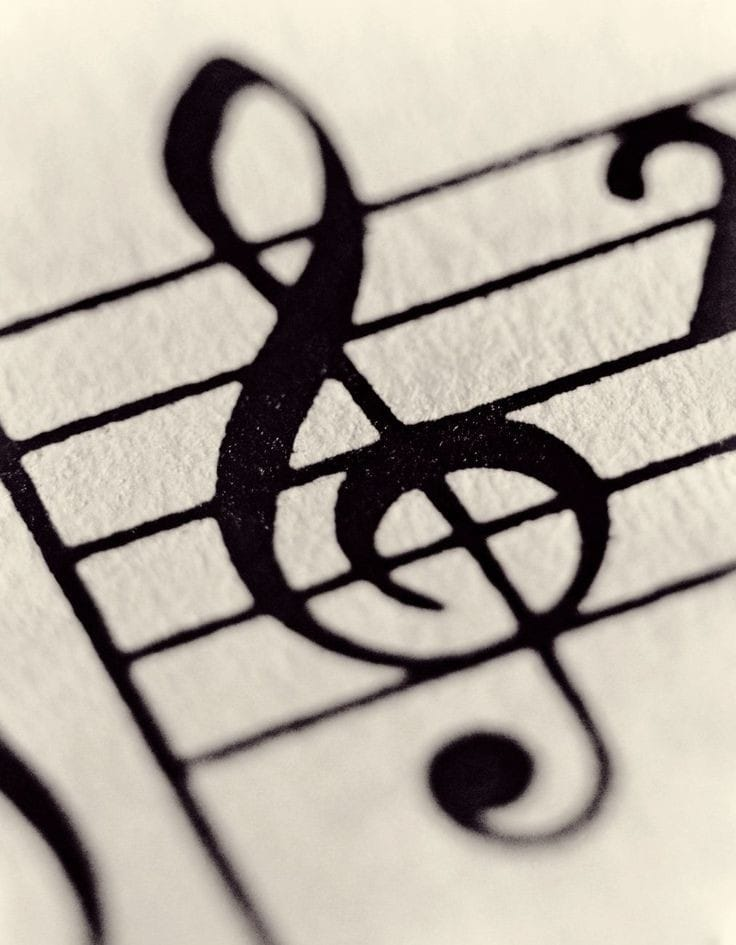
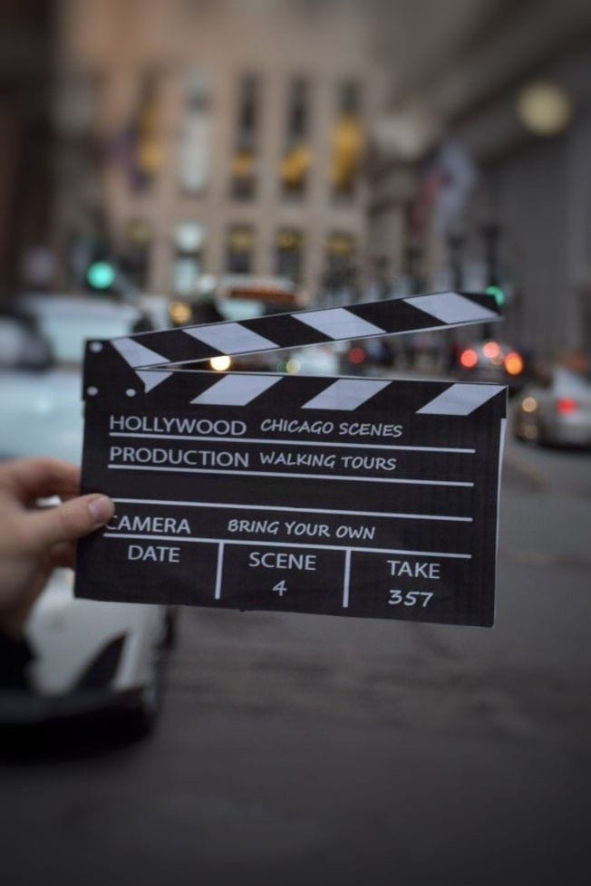
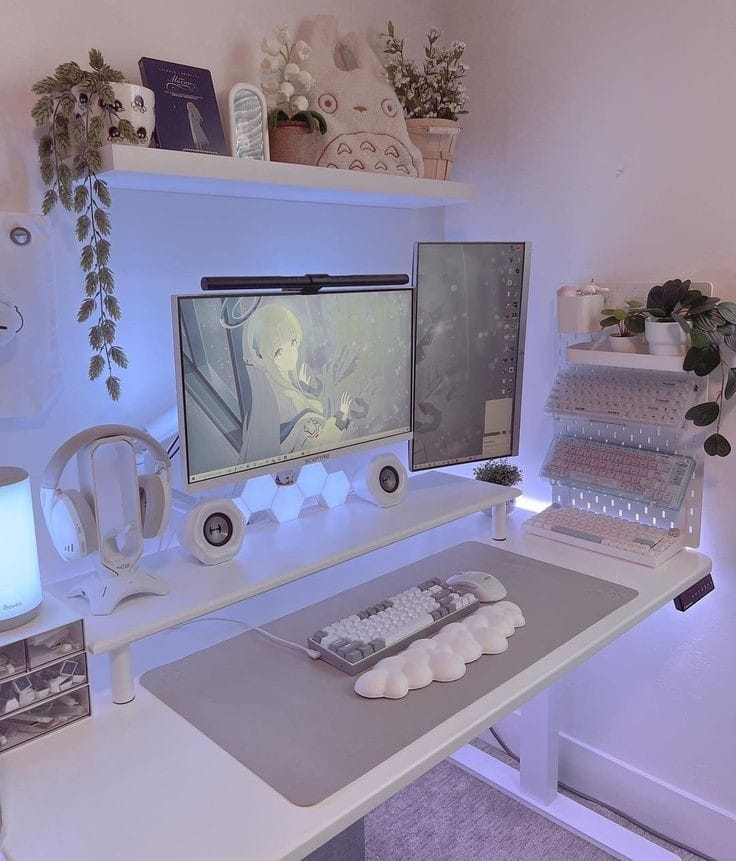
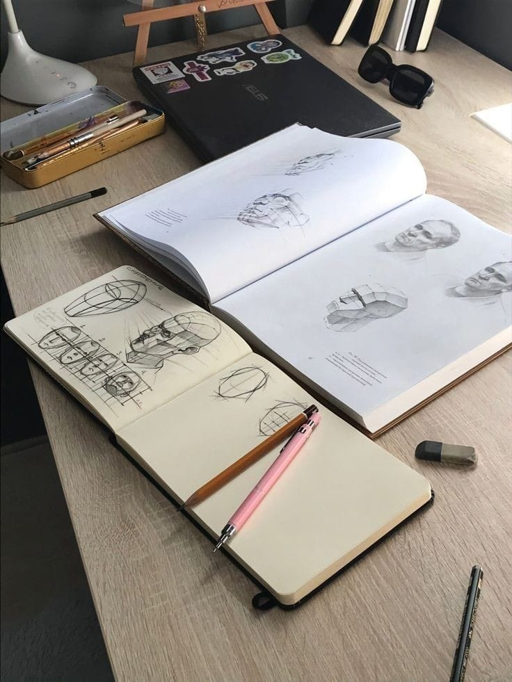

Sobre mi
¡Hola! Soy Alma tengo 23 años, actualmente estudio diseño gráfico en la Benemérita Universidad Autónoma de Puebla, cursando el séptimo semestre de
la licenciatura. Nací en Puebla y mis colores favoritos son el azul y los tonos neutros.
Como capricornio, me gusta mantenerme enfocada en mis metas. Estoy ampliando mis conocimientos pues me gusta
conocer nuevas cosas, estoy aprendiendo alemán y a punto de certificarme en inglés.
Me gustan mucho los animales y comparto mis días con Julio mi gato, Baloo mi perrito que es pitbull, y
Jacinta, mi tortuga.
¡En el apartado de esta página web hablaré un poco más de mí mencionando cosas como mis hobbies, lo
que me gusta, etc.!
Musica
La música es muy importante para y ha estado en mi vida desde muy pequeña, si bien al inicio no fue práctico,
mis papás me ponían musica todo el tiempo para amenizar cualquier momento del día, posteriormente mi hermano
entro a estudiar en el conservatorio de música de Puebla y eso solo despertó mi interés más en los
instrumentos y la música en general.
Mi sueño siempre fue tocar el violín aunque no lo pude cumplir en ese momento y dejé ese tema como solo algo
que hacía en mis tiempos libres o mis traslados de un lugar a otro.
Cuando estuve en la primaria en años avanzados, decidí adentrarme más en el tema y entre al grupo de música,
estuve en el coro, participamos numerosas veces y después decidí pasarme al grupo de flauta dulce, un
instrumento que seguramente todos los niños que pasan por escuelas públicas en México saben tocar.
La verdad es que era muy buena y me gustaba muchísimo hacerlo, siempre he considerado que tengo un muy buen
oído, por lo que podía sacar canciones de solo escucharlas y eso me parecía muy entretenido.
Salí de la primaria y quería seguir estando cerca de la música así que me metí a la marching band de mi
escuela, esto fue muy curioso porque entre a un instrumento muy poco conocido si tener ni idea de como se
tocaba, era el melófono, le tomé mucho cariño y aprendí a tocar muy rápido, ensayaba todos los días y también
los sábados, eran tiempos muy divertidos y disfrutaba mucho de estar con mis amigos.
En la banda de música desfile varias veces, participe en festivales, homenajes, eventos importantes, etc.,
incluso surgió la posibilidad de irme a una gira en por Europa, principalmente a Rusia a un festival muy
importante al que la marching band a la que pertenecía fue invitada.
Por cuestiones personales no pude ir, pero estoy no me detuvo y continúe esforzándome para seguir aprendiendo
Los años pasaron y salí de la secundaria y aunque aún fuera seguí participando en eventos, hasta que por la
escuela, tuve que dejarlo.
En preparatoria me regalaron un violín y honestamente eso me hizo muy feliz, así que desde entonces trato de
ensayar cada que puedo un poco para que algún día se buena en el instrumento que siempre quise, aunque no
tengo tanto tiempo para hacerlo pues, la universidad me complica mucho esto.

Ejercicio
Nunca he sido muy fan de esto, pero siempre he sido consciente de la importancia de este tema en mi salud.
Desde muy pequeña he hecho muchas actividades, si bien no he estado mucho tiempo en todas, he tratado de estar
activa en alguna cosa constantemente.
Inicie con baile desde muy pequeña, después intenté con karate, artes marciales mixtas, basketball, handball,
salto con cuerda artística, box y porras, debido a que me cambiaba todo el tiempo de escuela, nunca eran
constantes mis actividades ni si quiera permanecía mucho, aunque llevo siempre un poquito de cada cosa en mi.
Poco tiempo después descubrí lo mucho que me gusta el ciclismo y aunque por la escuela ya no tengo tiempo de
practicarlo mucho, disfruto cada vez que tengo la oportunidad de salir un rato con gente que quiero a andar en
bicicleta.
Actualmente voy al gimnasio en las tardes, entreno todo el cuerpo, por eso lo considero un hobbie, pues paso
gran parte de mi tiempo ahí y lo disfruto bastante.
Cine
Quise poner el cine como uno de mis hobbies porque sin miedo a equivocarme, puedo compartir que ver películas
y series es una de mis actividades favoritas y cada que tengo un tiempo libre para descansar de mis
actividades semanales, sin duda es lo primero que pienso en hacer.
Mi serie favorita es Friends, una comedia que sigue las vidas y relaciones de seis amigos que viven en Nueva
York: Rachel, Ross, Monica, Chandler, Joey y Phoebe.
La serie aborda temas como el amor, la amistad, el trabajo y la familia, a través de situaciones cómicas y
emotivas mientras los personajes enfrentan los altibajos de la vida adulta y navegan por las complejidades de
las relaciones interpersonales.
En cuanto películas para mí es difícil elegir una, pues como me gusta mucho todo este ámbito, todo el tiempo
estoy conociendo nuevas, por lo que prefiero siempre decir que no tengo una película favorita, pues quien
sabe, tal vez el día de mañana ve una película que me guste más que la última que vi.

Videojuegos
Los videojuegos son otro hobbie para mí pues es una manera de interactuar con mis amigos que no se compara a
ninguna otra.
Me gusta en las noches cada que tengo tiempo jugar un rato mis juegos favoritos con mis amigos, pues es una
manera divertida de convivir.
Los tipos de juegos que me gustan no son tan variados, pues disfruto mucho desde los battle royals hasta los
creativos o de supervivencia.
Honestamente no me considero muy buena porque no tengo el tiempo suficiente para perfeccionar mis habilidades,
pero me defiendo a la hora de jugar.
Las principales plataformas en las que juego son en xbox y PC, pues jugar xbox muchas veces te limita al
querer jugar con personas que lo hacen desde otra plataforma.
Mis juegos favoritos son:
- Grand Theft Auto:
Es un videojuego de mundo abierto que se centra en la acción y la delincuencia. En este juego, los
jugadores
asumen el papel de un personaje criminal que navega por una ciudad ficticia realizando misiones y
actividades
delictivas, como robo de autos, asesinatos, tráfico de drogas y más. A medida que avanzan en la historia,
los
jugadores pueden explorar libremente el entorno, interactuar con personajes no jugadores y participar en
actividades secundarias. Con una narrativa no lineal y una jugabilidad diversa, la serie "Grand Theft Auto"
ofrece una experiencia inmersiva que ha ganado popularidad por su libertad de acción y su mundo detallado y
vibrante.
- Fortnite:
Es un videojuego de supervivencia y construcción desarrollado por Epic Games. Ambientado en un mundo
post-apocalíptico, los jugadores son dejados en una isla donde deben luchar entre sí para ser el último
sobreviviente. El juego se divide en dos modos principales: "Salva el mundo" y "Battle Royale". En el modo
"Battle Royale", los jugadores compiten en un mapa cada vez más pequeño mientras recogen armas, recursos y
construyen estructuras para defenderse y eliminar a sus oponentes. El objetivo es ser el último jugador o
equipo en pie. Con una combinación de estrategia, habilidad y construcción rápida, "Fortnite" se ha
convertido
en uno de los juegos más populares del mundo, especialmente entre los jugadores más jóvenes.
- Call of Duty:
Es un videojuego de disparos en primera persona que abarca diversos conflictos militares, desde la Segunda
Guerra Mundial hasta la guerra moderna y futurista. Cada juego de la serie presenta una campaña individual
con
una narrativa centrada en el combate militar, donde los jugadores asumen el papel de soldados de diferentes
facciones y enfrentan misiones diversas y desafiantes en diversos escenarios globales. Además de la campaña
para un jugador, los juegos de "Call of Duty" también ofrecen modos multijugador competitivos, donde los
jugadores pueden enfrentarse en línea en una variedad de modos de juego y mapas, utilizando armas y equipos
modernos o históricos. Con una jugabilidad frenética y una atención al realismo militar, la serie "Call of
Duty" ha sido una de las franquicias de videojuegos más exitosas y duraderas en la industria del
entretenimiento.
- Fall Guys: Ultimate Knockout:
Es un videojuego multijugador en línea desarrollado por Mediatonic. El juego presenta a 60 jugadores
compitiendo en una serie de rondas de desafíos estilo juego de obstáculos en un mundo colorido y
extravagante.
Cada ronda presenta una serie de pruebas diferentes que van desde correr a través de obstáculos hasta
superar
plataformas giratorias y evitar trampas. El objetivo es ser uno de los pocos jugadores que sobreviven a cada
ronda, avanzar a la siguiente etapa y eventualmente ganar la corona al final del juego. Con una combinación
de
habilidades, estrategia y un toque de caos, "Fall Guys" ofrece una experiencia de juego divertida y
competitiva que ha ganado popularidad por su estilo único y su enfoque en la diversión sin complicaciones.
- Minecraft:
Es un videojuego de mundo abierto desarrollado por Mojang Studios. Los jugadores son colocados en un vasto
mundo generado proceduralmente, donde pueden explorar, recolectar recursos, construir estructuras y
enfrentarse a desafíos variados. Con gráficos estilo retro y una jugabilidad enfocada en la creatividad y la
exploración, los jugadores pueden construir virtualmente cualquier cosa que puedan imaginar, desde simples
cabañas hasta complejas ciudades, utilizando una variedad de bloques diferentes. El juego ofrece varios
modos
de juego, incluyendo el modo de supervivencia, donde los jugadores deben gestionar su salud y recursos
mientras enfrentan peligros como monstruos y el modo creativo, que proporciona acceso ilimitado a todos los
recursos y permite construir libremente sin restricciones. Con su naturaleza sandbox y su comunidad activa
de
jugadores y creadores de contenido, "Minecraft" se ha convertido en uno de los juegos más populares y
duraderos de todos los tiempos.

Arte
Cómo mencioné al inicio, estudio diseño gráfico, por lo que constantemente estoy rodeada de arte y también
debo yo saber de este tema.
Una de mis actos favoritas es dibujar, pues siento que es una manera de desenvolverse libremente. No soy tan
buena, pero intento mejorar cada día.
Los principales tipos de dibujo que me gusta hacer son los análogos con estilo realista y a grafito y los
digitales con estilo realista también.
Me encantaría aprender muchas más técnicas, pues siento que el mundo del dibujo es inmenso y siempre hay algo
nuevo que aprender y crear.
En cuanto a mis artistas favoritos, si bien no tienen el mismo estilo de dibujo al que yo me enfoco, me gustan
demasiado sus obras, pues me transmiten sensaciones muy linda sobre el arte.
Alfonso Mucha y Claude Monet fueron dos artistas impresionantes. Mucha era conocido por sus elegantes carteles
art nouveau, mientras que Monet se destacó por sus impresionantes paisajes impresionistas.
Lo genial de las obras de Mucha es cómo captura la belleza de la naturaleza y la feminidad con líneas fluidas
y colores vibrantes. Sus carteles son como obras de arte en sí mismos, con detalles meticulosos que te hacen
detenerte y admirarlos.
Por otro lado, Monet era un maestro en capturar la luz y el movimiento en sus pinturas. Sus pinceladas sueltas
y su uso único del color hacen que sus paisajes parezcan casi mágicos, transportándote a lugares lejanos con
solo mirarlos.
Lo que hace que las obras de ambos sean tan buenas es su habilidad para transmitir emociones y capturar la
esencia de lo que están pintando. Ya sea a través de la elegancia de Mucha o la impresión de la realidad de
Monet, sus obras continúan inspirando a generaciones de artistas y admiradores.
Hay muchísimos artistas que me gustan en realidad, aunque ellos dos son de los que más destacan en mis
favoritos
